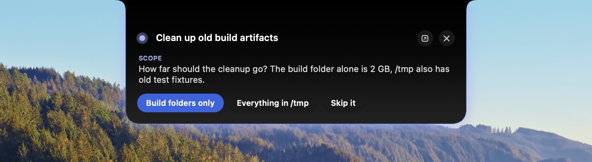

It says one thing, and leaves nothing out.
Closed, the notch shows either what needs you or how many agents are working. Anything waiting on you comes first.
When an agent needs you, you never switch apps.

Approve or decline
See the exact command and why it needs a look. Approve with A and decline with D.

Answer questions
Tap an answer or press 1–9. To reply in your own words or steer a running agent, press R.

See it finish
When a run ends, its final message drops down for a few seconds with a soft chime. It goes away once you've seen the thread in T3 Code, however you got there.
Small, and it doesn't miss anything.
Working, Waiting, Pending Approval, Awaiting Input, Plan Ready, Failed and Completed. The logic is ported from T3's sidebar and covered by tests.
Claude, Codex, Cursor, Grok, opencode and more, each as pixel art with a radar sweep while it works.
Hover a running command to watch its last lines stream in.
Branch, model, PR checks, review state and conflicts, plus a countdown until your usage limit resets.
⌘⇧Space opens it, or record your own shortcut. Arrow keys select, ⏎ opens and Esc closes it.
Follows T3's palette live: T3 Chat, Grove, Ocean, Ember and Iris.
A soft chime when a run finishes and a wooden knock when an agent needs you. Each one can be turned off.
Hidden from screen sharing, recordings and screenshots.
Connects to your local T3 server with its own scoped token. Nothing leaves your Mac.
It's fast.
It's on screen all day, so it's built to cost almost nothing. You won't notice it's running.
About 0.6% on average while it streams updates from T3.
No growth over time, however long you leave it open.
Native AppKit and Core Animation. macOS runs every spring and slide itself.
Get it on your Mac.
Download
Grab the latest release, move it to Applications and open it. It finds T3 Code and connects on its own.
Download for macOSLatest release on GitHub · Free and open source
- macOS 14 or later. It works with or without a camera notch.
- T3 Code desktop app, running. It finds the local server by itself.
- On first launch it gets its own token from T3's CLI. Nothing to configure.
Build from source
You'll need the Xcode command-line tools (Swift 5.9 or later).
$ git clone \ https://github.com/notkainoa/better-t3-notch $ cd better-t3-notch $ ./build.sh $ open BetterT3Notch.app